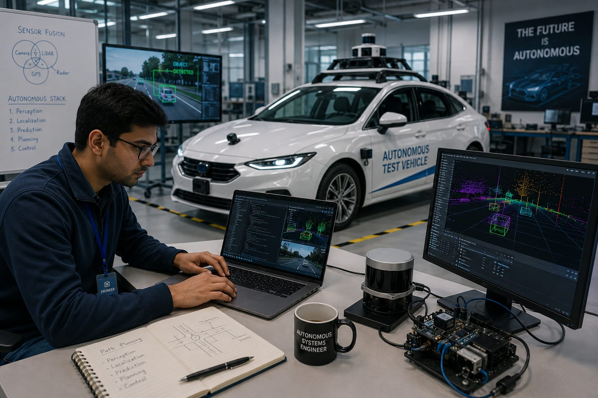

- Imagine a company is building a self-driving car.
- Car must move safely without a driver.
- It uses cameras, sensors, and AI to understand its surroundings.
- It must detect obstacles, choose the correct path, and make decisions on its own.
- The person who builds these autonomous systems is called an Autonomous Systems Engineer.
- 👉 In simple words: Autonomous Systems Engineers create machines that can sense, think, and operate on their own.
Autonomous Systems Engineer
🧑🎨 What Do They Do?

🎓 How to Become an Autonomous Systems Engineer
These beginner-level courses help students learn robotics, automation, electronics, artificial intelligence, and autonomous systems fundamentals.
Diploma in Mechatronics Engineering
Duration: 3 Years
Eligibility: Class 10 Pass
Entrance Exam: Polytechnic Entrance Exam / Merit-Based Admission
Diploma in Electronics and Communication Engineering (ECE)
Duration: 3 Years
Eligibility: Class 10 Pass
Entrance Exam: Polytechnic Entrance Exam / Merit-Based Admission
Diploma in Computer Science Engineering (CSE)
Duration: 3 Years
Eligibility: Class 10 Pass
Entrance Exam: Polytechnic Entrance Exam / Merit-Based Admission
📝 Exam Details
(Click on the exam name to see full details)
Polytechnic Entrance Exam Merit-Based AdmissionNote: After Diploma, you won't get a direct job as an Autonomous Systems Engineer.
Most students continue with B.Tech through Lateral Entry or pursue advanced robotics, AI, and automation training.
These degree programs help students learn robotics, artificial intelligence, automation, software development, and autonomous systems.
B.Tech in Robotics and Artificial Intelligence
Duration: 4 Years
Eligibility: 10+2 Pass with Physics, Chemistry, and Mathematics (Minimum 45%–50% marks)
Entrance Exam: JEE Main / JEE Advanced / State Engineering Entrance Exams
B.Tech in Mechatronics Engineering
Duration: 4 Years
Eligibility: 10+2 Pass with Physics, Chemistry, and Mathematics (Minimum 45%–50% marks)
Entrance Exam: JEE Main / JEE Advanced / State Engineering Entrance Exams
B.Tech in Computer Science Engineering (AI & ML)
Duration: 4 Years
Eligibility: 10+2 Pass with Physics, Chemistry, and Mathematics (Minimum 45%–50% marks)
Entrance Exam: JEE Main / JEE Advanced / State Engineering Entrance Exams
📝 Exam Details
(Click on the exam name to see full details)
JEE Main JEE Advanced State Engineering Entrance ExamsNote: Students can also become Autonomous Systems Engineers through Mechanical Engineering, Electronics & Communication Engineering (ECE), or Electrical Engineering, followed by robotics, AI, ROS, embedded systems, and autonomous vehicle certifications.
These lateral-entry degree programs help diploma holders specialize in robotics, artificial intelligence, automation, and autonomous systems.
B.Tech Lateral Entry in Robotics and Artificial Intelligence
Duration: 3 Years (Direct Entry into 2nd Year)
Eligibility: 3-Year Engineering Diploma in relevant technical branches
Entrance Exam: State Lateral Entry Entrance Tests (JELET, ECET, etc.)
B.Tech Lateral Entry in Mechatronics Engineering
Duration: 3 Years
Eligibility: 3-Year Engineering Diploma in Mechatronics, Mechanical, or Electronics
Entrance Exam: State Lateral Entry Entrance Tests
B.Tech Lateral Entry in Computer Science Engineering (AI & ML)
Duration: 3 Years
Eligibility: 3-Year Engineering Diploma in CSE, IT, or allied software branches
Entrance Exam: State Lateral Entry Entrance Tests
Note: After completing a diploma, students typically continue through B.Tech Lateral Entry before becoming Autonomous Systems Engineers.
Advanced skills in AI, robotics, ROS, computer vision, and autonomous technologies are usually learned during the degree.
These postgraduate programs help engineers develop advanced skills in autonomous systems, robotics, artificial intelligence, and intelligent automation.
M.Tech in Autonomous Systems
Duration: 2 Years
Eligibility: Graduate (B.Tech / B.E. in CSE, ECE, EE, Mechanical, or Mechatronics)
Entrance Exam: GATE / University-Specific PG Entrance Exams
M.Tech in Robotics and Automation
Duration: 2 Years
Eligibility: Graduate (B.Tech / B.E. in relevant engineering disciplines)
Entrance Exam: GATE / State PGCET
M.Tech in Artificial Intelligence
Duration: 2 Years
Eligibility: Graduate (B.Tech / B.E. in CSE, IT, ECE, or related engineering branches)
Entrance Exam: GATE / State PGCET
📝 Exam Details
(Click on the exam name to see full details)
GATE State PGCET University Entrance ExamsNote: At the postgraduate level, students usually focus on advanced topics such as autonomous vehicles, robotics, artificial intelligence, computer vision, machine learning, control systems, and intelligent automation.
Note:
(Age limits, marks, and admission process may vary depending on the college or state. These courses are available in many colleges and universities across India. You can choose colleges based on your location, budget, and entrance exams.)
🏛️ Top Colleges for Autonomous Systems Engineer
(Tap on a college to view the details)
After 10th Pass (Diplomas)
Government Polytechnic, Mumbai PSG Polytechnic College, Coimbatore Government Polytechnic, Pune MEI Polytechnic, Bangalore Shah and Anchor Kutchhi Polytechnic, MumbaiAfter 12th Pass (Bachelor's Degrees)
Indian Institute of Technology (IIT) Hyderabad, Hyderabad Amrita Vishwa Vidyapeetham, Coimbatore Vellore Institute of Technology (VIT), Vellore Nitte Meenakshi Institute of Technology (NMIT), Bangalore SRM Institute of Science and Technology, Chennai PSG College of Technology, CoimbatoreSTEP 1
Imagine you are working as an Autonomous Systems Engineer.
STEP 2
Your company is building a self-driving car.
STEP 3
You connect cameras, sensors, and GPS system to the car.
STEP 4
You create software that helps the car to drive automatically.
STEP 5
You test the car to make sure it drives safely.
STEP 6
If there is any mistake, you improve the system and test it again.
STEP 7
If you enjoy AI, smart vehicles, and technology, this career may be right for you.
Where do Autonomous Systems Engineers work? (Job Roles + Growth)
These are some roles you can explore in Autonomous Systems Engineering.
You usually start with beginner roles and grow with experience.
🟢 Beginner Roles
🤖
Junior Automation & Systems Associate
(After Short-Term Certification / Diploma)
Tests sensors and handles basic wiring for automated machines.
📋
Graduate Engineer Trainee (Autonomous Systems)
(After Diploma / B.Tech)
Assists in testing autonomous software and system calibration.
🔵 Mid-Level Roles
🚗
Autonomous Vehicles Software Engineer
(After B.Tech + Industrial Certification)
Develops software that helps self-driving vehicles navigate safely.
📡
Perception & Sensor Fusion Engineer
(After B.Tech + Experience)
Combines data from cameras, LiDAR, and sensors to help machines understand their surroundings.
🟣 Advanced Roles
🧠
Principal Autonomous Systems Architect
(After M.Tech + Advanced Specialization)
Designs intelligent systems for autonomous vehicles, drones, and robots.
🌍
Director of Autonomous Mobility R&D
(After Advanced Executive Program + Experience)
Leads teams developing next-generation autonomous technologies.
🚗
Autonomous Vehicle Companies
Develop self-driving cars, autonomous trucks, and smart transportation systems.
🚁
Drone Technology Companies
Build autonomous drones used for delivery, mapping, surveillance, and inspections.
🏭
Industrial Automation Companies
Create intelligent machines and automated systems for factories.
🤖
Robotics Companies
Design robots that can work independently using sensors and AI.
🛰️
Aerospace & Defense Organizations
Develop autonomous aircraft, military vehicles, and advanced navigation systems.
🌍
Research & Innovation Centers
Build next-generation autonomous technologies and intelligent systems.
(Click Yes or No for each question)
1. Have you heard of self-driving cars?
2. Do you want to learn how self-driving cars work?
3. Have you ever wondered how a car can drive safely without a driver?
4. Are you interested in learning how cameras, sensors, and AI help vehicles drive?
5. Imagine you are helping build a self-driving car. You create the technology that helps the car understand its surroundings, make decisions, and drive safely without a human driver. Does this excite you?